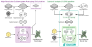
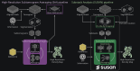

Overview¶
SUSAN (Substack Analysis) is an open-source, high-performance framework for subtomogram averaging (StA) in cryoelectron tomography (CryoET). It reimplements the full high-resolution StA pipeline using substacks (stacks of 2D tilt-series projections and their respective geometric and optical information) instead of reconstructed 3D subtomograms. A key property of this formulation is that the 3D cross-correlation is computed exactly from the 2D projections, with no approximations to the alignment metric. This conceptual shift reduces computational complexity from \(\mathcal{O}(N^3)\) to \(\mathcal{O}(N_\text{proj} N^2)\), yielding orders-of-magnitude reductions in runtime and storage compared with conventional tomogram-centric pipelines, without sacrificing accuracy.
In practice, this means tomograms serve only for visual inspection and initial particle picking; the STA problem itself is solved directly against the raw tilt-series stacks. Substacks are extracted on-the-fly during processing, so full subtomogram volumes never need to be written to disk, eliminating the dominant source of storage in conventional pipelines. Achieving this required a complete reimplementation of the entire pipeline natively in the projection domain, covering CTF estimation, CTF refinement, 3D/2D alignment, and averaging.
{kind=link}

{kind=link}

The computational core is implemented in GPU-accelerated C++/CUDA and supports distributed execution via MPI. A Python (and MATLAB) interface provides scriptable, high-level control of complete processing pipelines. An optional machine-learning denoiser (Noise2Noise) further stabilises high-resolution reconstructions within the iterative refinement loop.
SUSAN achieves state-of-the-art resolutions across a wide range of datasets, from purified complexes and viral assemblies to challenging in situ samples. The orders-of-magnitude reduction in computational cost has a direct practical impact in two directions: problems that previously required large GPU clusters become tractable on standard academic hardware, and the same hardware budget can instead be reinvested to scale up to larger datasets, higher-resolution targets, or more complex multi-reference analyses. This dual flexibility effectively democratises high-resolution StA, lowering the barrier to entry across the CryoET community.
Key features at a glance¶
Exact 3D cross-correlation: computed directly from 2D projections via the projected cross-correlation (pCC) algorithm [sanchez_2019_pcc] [sanchez_2019_alignment]; no approximation is introduced to the alignment metric.
Projection-domain pipeline: all processing steps, including 3D alignment and reconstruction, operate on 2D projections; tomograms and subtomograms are not required within the iterative refinement loop, only for initial particle picking and visual validation.
Zero pre-extracted data storage: no subtomograms or substack-equivalent data are written to disk; substacks are cropped on-the-fly from the raw tilt series directly into RAM and GPU memory.
GPU-accelerated and distributed execution: all heavy computations are performed in 2D on GPU; multi-node parallelism is supported via MPI.
CTF estimation and refinement: with a CryoET-specific defocus estimator that handles severe defocus gradients in thick in situ specimens.
Multi-reference alignment and classification (MRA/MRC): with per-particle reference assignment.
MAP-like regularisation priors: configurable Gaussian priors on translational offsets, orientational angles, and defocus values constrain the alignment and CTF refinement search, stabilising convergence and preventing noise-driven parameter drift.
MACE framework: a modular, user-extensible Multi-Agent Consensus Equilibrium formulation; the pipeline decomposes into independent, interchangeable agents (reconstruction, alignment, 2D refinement, CTF refinement, denoising prior) that can be replaced, combined, or scripted independently.
Noise2Noise: a lightweight self-supervised denoiser operating on half-maps, integrated as the volume-prior agent within the MACE framework.
Multiresolution support: particle metadata is decoupled from tomogram geometry, allowing the same particle set to be processed seamlessly at multiple binning levels.
Minimal external dependencies: installable as a standard Python package alongside existing CryoET environments.
Contributing¶
SUSAN is hosted on GitHub at https://github.com/rsanchezloayza/SUSAN.
Bug reports and feature requests are welcome via the GitHub issue tracker.
Pull requests should target the main branch. Please open an issue first
to discuss any non-trivial change.
License¶
SUSAN is released under the GNU Affero General Public License v3.0 (AGPL-3).
You are free to use, modify, and distribute SUSAN under the terms of that
licence. In particular, if you deploy SUSAN as part of a network service, you
must make the complete source of your modifications available under the same
terms. See the LICENSE file in the repository root for the full text.
References
R. M. Sánchez, R. Mester, and M. Kudryashev, “Fast Cross Correlation for Limited Angle Tomographic Data,” Image Analysis, Lecture Notes in Computer Science, Springer, 2019. DOI: 10.1007/978-3-030-20205-7_34
R. M. Sánchez, R. Mester, and M. Kudryashev, “Fast Alignment of Limited Angle Tomograms by Projected Cross Correlation,” 27th European Signal Processing Conference (EUSIPCO), Sep. 2019. DOI: 10.23919/EUSIPCO.2019.8903041